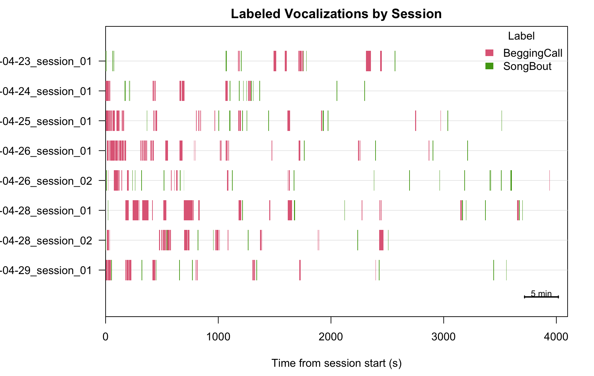
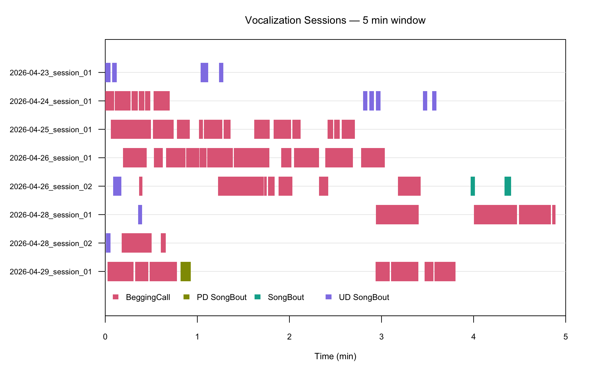
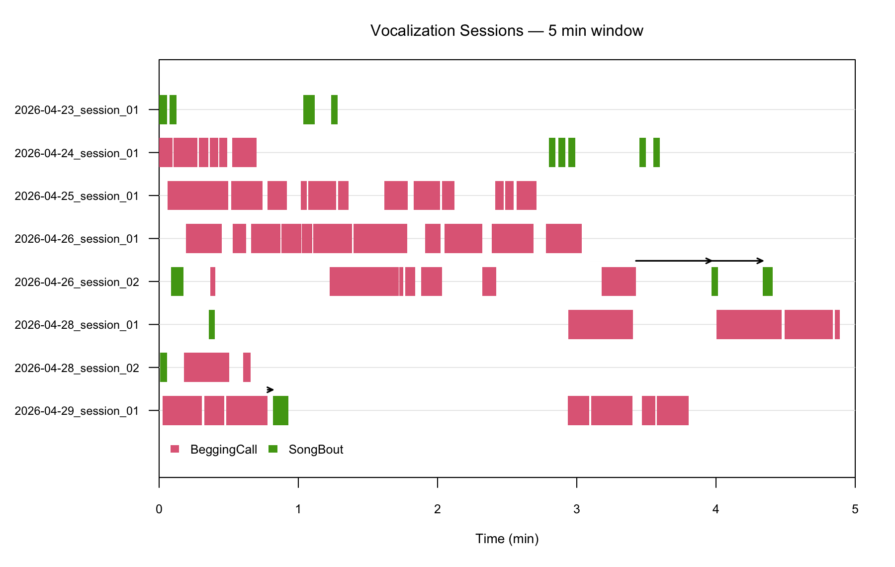

Introduction
LYS (Label Your Song) is an R package for recording management, session assignment, and tracking the interaction of multiple vocal components across behavioral experiments. It is designed for researchers who record birdsong (or other vocalizations) across many sessions and need to automatically detect, classify, and visualize different vocal types — such as song bouts and begging calls — within the same continuous recording.
This tutorial walks through the complete LYS workflow using a zebra finch dataset spanning posthatch days 661–667. Along the way you will see how to:
- Explore a single WAV file and design vocalization templates interactively.
- Pool recordings across sessions and create a LYS object for batch processing.
- Detect general audio activity and run template-based vocalization detection.
- Label detected clips using rule-based logic.
- Visualize labeled vocalizations as a session ethogram and a sliding-window animation.
Prerequisites: LYS requires the ASAP package for spectrogram visualization and audio clipping.
Part 1 — Explore a Single WAV File
Before running the full batch pipeline it pays to inspect a few
recordings manually. LYS re-exports visualize_song() and
create_audio_clip() from ASAP, so you can work entirely
within LYS.
1.1 Visualize a recording
data_root_dir <- "/path/to/your/data" # <- change to your data directory
file_path <- file.path(data_root_dir, "661/G769_46135.58056615_4_23_16_7_36.wav")
visualize_song(file_path,
start_time_in_second = 0,
end_time_in_second = 3)1.2 Create a song template
Identify a clean song syllable in the spectrogram, clip that region,
then call create_template() on the clip. The template will
be used later by detect_template() as a correlation
fingerprint.
# Trim to the region of interest first
clip_path <- create_audio_clip(file_path,
start_time = 0,
end_time = 2.5)
# Build a correlation template from one song syllable
template_song <- create_template(
clip_path,
template_name = "song",
start_time = 0.45,
end_time = 0.70,
freq_min = 1,
freq_max = 8,
write_template = TRUE # saves a .rda file next to the clip
)Run a quick sanity check on the same file:
template_matches <- detect_template(
x = file_path,
template = template_song,
proximity_window = 0.5,
save_plot = FALSE
)1.3 Create a begging-call template
Repeat the process for begging calls. Here two representative call exemplars are turned into separate templates and then run together.
wav_file <- file.path(data_root_dir, "661/G769_46135.58036834_4_23_16_7_16.wav")
visualize_song(wav_file,
start_time_in_second = 0,
end_time_in_second = 8)
clip_path1 <- create_audio_clip(wav_file,
start_time = 2,
end_time = 6)
begging_1 <- create_template(
clip_path1,
template_name = "begging_1",
start_time = 0.50,
end_time = 0.75,
freq_min = 1,
freq_max = 12,
write_template = TRUE
)
begging_2 <- create_template(
clip_path1,
template_name = "begging_2",
start_time = 1.63,
end_time = 1.83,
freq_min = 1,
freq_max = 12,
write_template = TRUE
)
# Detect both call templates together
template_matches <- detect_template(
x = wav_file,
template = c(begging_1, begging_2),
threshold = 0.4,
save_plot = FALSE
)Tuning tips for
create_template()/detect_template()
Parameter Role When to adjust start_time/end_timeTime window of the template syllable Narrow to a single clean, representative token freq_min/freq_maxFrequency band (kHz) for the correlation template Match the call’s dominant frequency range thresholdMinimum correlation score (0–1) to report a detection Lower → more detections (more false positives); higher → fewer (more misses) proximity_windowMerge nearby peaks within this window (seconds) Set to ≈ syllable duration to suppress duplicate hits
Part 2 — Batch Processing with a LYS Object
Once the template parameters look right on single files, pool your
recordings and create a lys object to process every session
at once.
2.1 Create a LYS object
create_lys_object() scans a directory recursively,
parses timestamps from SAP-formatted filenames, and automatically groups
consecutive recordings into sessions separated by gaps longer than
session_gap_hours.
# Pool sessions 661–667 dph into one directory before calling this
pooled_sessions_path <- file.path(data_root_dir, "661/PD_661_667")
lys <- create_lys_object(
base_path = pooled_sessions_path,
session_gap_hours = 1 # default; adjust to your experiment
)After creation, print the object to see a summary:
lys # or: summary(lys)#> LYS Object
#> ==========
#> Base path: /path/to/PD_661_667
#> Recording days: 7
#> Sessions: 14
#> Files: 168
#> Detected vocalizations: 0
#> Template types: song_bout, innate_call, pupil_beg_callThe object stores:
| Slot | Contents |
|---|---|
lys$metadata |
One row per WAV file with parsed timestamps, session IDs, and session labels |
lys$day_summary |
Counts of files and sessions per recording day |
lys$session_summary |
Start time, duration, and file count per session |
lys$templates |
Template registry (populated in §2.3) |
lys$vocalizations |
Detected and labeled clips (populated in §2.4–2.5) |
2.2 Locate the template source files
get_wav_indices() returns the row index in
lys$metadata for a given filename, which you need when
telling create_template.lys() which file to use as the
template source.
song_index <- get_wav_indices(lys, "G769_46135.58056615_4_23_16_7_36.wav")
beg_index <- get_wav_indices(lys, "G769_46135.58036834_4_23_16_7_16.wav")2.3 Detect general audio activity
detect_vocalization() scans every WAV file for periods
of elevated RMS energy within a user-defined frequency band. Use
multiple cores to speed up large datasets.
lys <- detect_vocalization(lys, cores = 4)Key parameters for
detect_vocalization()
Parameter Role Typical range freq_rangeBandpass filter limits in kHz applied before RMS computation c(3, 5)for zebra finch songrms_thresholdNormalized RMS threshold (0–1) above which audio is “active” 0.1–0.3 min_durationMinimum bout duration (s) to keep 0.5–2 s gap_durationGaps shorter than this (s) are merged into one bout 0.3–1 s norm_methodHow the RMS envelope is scaled before thresholding ( "quantile"or"max")"quantile"is more robust to occasional loud noises
2.4 Register templates and run template detection
Register both the song and begging-call templates against the
lys object, using the same timing and frequency parameters
that worked on the single file. Then run detect_template()
in batch mode.
lys <- create_template(
lys,
template_name = "song",
template_type = "song_bout",
index = song_index,
start_time = 0.45,
end_time = 0.70,
freq_min = 1,
freq_max = 8,
threshold = 0.60
)
lys <- create_template(
lys,
template_name = "begging_2",
template_type = "pupil_beg_call",
index = beg_index,
start_time = 3.63, # times are relative to the clip, not the file
end_time = 3.83,
freq_min = 1,
freq_max = 12,
threshold = 0.55
)
lys <- detect_template(
lys,
template_name = c("song", "begging_2")
)Results are accessible via
lys$templates$template_matches.
Part 3 — Label Vocalizations
label_vocalization() scores each detected audio clip
against the template match counts and applies a priority-ranked rule
table.
3.1 Define labeling rules
rules <- data.frame(
template_type = c("song_bout", "pupil_beg_call"),
label = c("SongBout", "BeggingCall"),
min_matches = c(1, 5), # minimum template hits required inside a bout
priority = c(2, 1) # lower number = higher priority when ties occur
)| Column | Meaning |
|---|---|
template_type |
Must match an allowed type registered in the lys
object |
label |
Human-readable label assigned when the rule fires |
min_matches |
Minimum number of template detections that must fall inside the bout |
priority |
When multiple rules fire, the row with the lowest priority number wins |
3.2 Run labeling
lys <- label_vocalization(
lys,
rules = rules
)Labeled results live in
lys$vocalizations$vocalization_label.
3.4 Re-label individual files
After inspecting plots you may want to adjust the rules for specific files without reprocessing the entire dataset.
new_rules <- data.frame(
template_type = c("song_bout", "pupil_beg_call"),
label = c("SongBout", "BeggingCall"),
min_matches = c(1, 5),
priority = c(1, 2) # priorities swapped for this file
)
lys <- label_vocalization(
lys,
rules = new_rules,
multi_label = TRUE, # allow compound labels (e.g. "SongBout;BeggingCall")
files = "G769_46136.49419826_4_24_13_43_39.wav",
save_plot = TRUE
)Part 4 — Export Vocalizations
Once vocalizations are detected and labeled, you may want to extract the individual audio clips from the source WAV files for downstream analyses (e.g., training a classifier, analyzing acoustic features, or manual verification).
The export_vocalizations() function extracts each
labeled vocalization bout, applies optional padding, and saves it as a
short WAV clip in a dedicated subdirectory.
4.1 Export compound/multi-label clips
When multi_label = TRUE is used (as in §3.4), some
vocalization clips will receive compound labels like
"SongBout;BeggingCall". You can export these co-occurring
events to their own folder:
# Define an export rule for compound labels
export_rules <- data.frame(
label = "SongBout;BeggingCall",
match_mode = "exact", # only export exact matches of this compound label
folder = "co-occurring", # folder name under output_dir
pad_start_sec = 0.1, # add 0.1s padding before onset
pad_end_sec = 0.1 # add 0.1s padding after offset
)
# Export the clips
lys <- export_vocalizations(
lys,
rules = export_rules,
output_dir = "vocalization_clips"
)This will create a subdirectory structure like:
vocalization_clips/
└── co-occurring/
├── G769_46136.49419826_4_24_13_43_39_s001_12040-13150ms.wav
└── export_manifest.csvA CSV manifest (export_manifest.csv) is automatically
generated in the output_dir to log the source file, precise
timing, and metadata for every exported clip.
Part 5 — Visualize: Session Ethogram
map_vocalization_sessions() places every labeled
vocalization on a timeline relative to the start of its recording
session, producing an ethogram-style raster plot.
lys <- map_vocalization_sessions(
lys,
labels = c("SongBout", "BeggingCall"),
drop_labels = "TBD",
save_plot = TRUE
)The resulting plot shows each session as a horizontal lane, with colored rectangles indicating the onset and offset of each vocalization type:

Session ethogram: SongBout (teal) and BeggingCall (orange) across seven recording sessions (PHD 661–667). Each horizontal lane represents one session; bar width encodes bout duration.
How to read the plot: Each row is one recording session (labeled on the y-axis by session ID). Colored rectangles mark vocalization bouts. Notice that BeggingCalls (orange) and SongBouts (teal) often occur in close temporal proximity — the animation in Part 7 reveals the fine-grained sequential structure.
Part 6 — Sequence-Based Annotation
The annotate_vocalizations() function evaluates a set of
sequential rules to reclassify vocalizations chronologically for each
session. This is extremely useful for subsequent statistical analyses,
such as counting how many bouts are provisioning-directed (PD) or
undirected (UD) relative to begging calls.
6.1 Apply sequence annotation rules
Let’s define a data frame of sequence rules and run
annotate_vocalizations():
# Define sequence annotation rules
rules <- data.frame(
preceding_label = c("BeggingCall", "PD SongBout", "BeggingCall"),
following_label = c("SongBout", "SongBout", "SongBout"),
min_gap_sec = c(0, 0, 120),
max_gap_sec = c(30, 10, Inf),
annotation = c("PD SongBout", "PD SongBout", "UD SongBout"),
color = "#E53935", # optional formatting used in animation
show_arrow = FALSE # optional formatting used in animation
)
# Apply rules to annotate the dataset
lys <- annotate_vocalizations(lys, sequence_rules = rules)The annotated events are stored in
lys$vocalization_annotations with an
annotated_label column.
6.2 View annotation summary
You can generate a summary table of the resulting annotations:
table(lys$vocalization_annotations$annotated_label)
# BeggingCall PD SongBout SongBout UD SongBout
# 191 24 19 45 Part 7 — Visualize: Sliding-Window Animation
animate_vocalization_sessions() creates a GIF that
scrolls a fixed-width time window across every session simultaneously,
making it easy to see within-session dynamics and sequential vocal
interactions.
Note:
annotate_vocalizations()vs.animate_vocalization_sessions()-annotate_vocalizations()evaluates sequence rules and saves annotations inside thelysobject for statistical analysis. -animate_vocalization_sessions()purely renders a GIF animation for visualization, using the rules to color-code elements dynamically without modifying the underlying data.
7.1 Basic animation with sequence reclassification
Here, a SongBout that starts within 30 s of a BeggingCall end is
relabeled "PD SongBout" (provisioning-directed) and
rendered in red using the same rules defined in §6.1.
lys <- animate_vocalization_sessions(
lys,
window_duration_min = 5,
step_seconds = 10,
sequence_rules = rules
)
Sliding-window animation (5-min window, 10-s step). SongBouts that follow a BeggingCall within 30 s are highlighted in red (PD SongBout). The animation scrolls through the full duration of every session in lockstep.
7.2 Revised animation — with gap arrows and session cap
This variant adds directional arrows spanning the gap between a
BeggingCall and the SongBout it preceded, making the latency visually
explicit. The max_session_sec = 3600 argument caps every
session at 1 hour so the animation does not scroll excessively.
arrow_only_rule <- data.frame(
preceding_label = "BeggingCall",
following_label = "SongBout",
min_gap_sec = 0,
max_gap_sec = 60,
annotation = "SongBout", # same as following_label: no color change, only arrow
show_arrow = TRUE
)
lys <- animate_vocalization_sessions(
lys,
window_duration_min = 5,
step_seconds = 10,
max_session_sec = 3600, # cap all sessions at 1 hour
sequence_rules = arrow_only_rule,
output_file = "vocalization_session_animation_revised.gif"
)
Revised animation with gap arrows. Black arrows span the gap between a BeggingCall end and the SongBout onset that follows within 60 s. The session is capped at 1 hour for display.
Key parameters for
animate_vocalization_sessions()
Parameter Role Typical range window_duration_minWidth of the sliding display window 5–30 min step_secondsHow far the window advances per frame 10–60 s max_session_secHard cap on session duration (seconds); NULL= shortest session1800–7200 fpsFrames per second of the output GIF 8–15 sequence_rulesData frame defining reclassification / arrow rules see §7.1
Summary
The table below maps the complete LYS workflow to the functions introduced in this tutorial:
| Step | Function | Output |
|---|---|---|
| Inspect recording | visualize_song() |
Spectrogram plot |
| Clip audio | create_audio_clip() |
Trimmed WAV file |
| Build template (file) | create_template(<wav_path>, ...) |
TemplateList object |
| Build template (lys) | create_template(<lys>, ...) |
Updated lys
|
| Detect audio activity | detect_vocalization(lys) |
lys$vocalizations |
| Template-match detection | detect_template(lys) |
lys$templates$template_matches |
| Rule-based labeling | label_vocalization(lys, rules) |
lys$vocalizations$vocalization_label |
| Export audio clips | export_vocalizations(lys, rules) |
Directory of WAV files + CSV manifest |
| Session ethogram | map_vocalization_sessions(lys) |
PNG + lys$vocalization_session_map
|
| Sequence-based annotation | annotate_vocalizations(lys, rules) |
lys$vocalization_annotations |
| Sliding-window animation | animate_vocalization_sessions(lys) |
GIF file |
Save the lys object with saveRDS() after
each major step and reload it with readRDS() to resume from
where you left off without rerunning expensive computations.